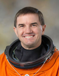

Lyndon B. Johnson Space Center
Houston, Texas 77058
|
National Aeronautics and Space Administration Lyndon B. Johnson Space Center Houston, Texas 77058 |
 |
Biographical Data |
||
Rex J. Walheim (Colonel, USAF, RETIRED)
NASA Astronaut
PERSONAL DATA: Born October 10, 1962, in Redwood City, California, but considers San Carlos, California, his hometown. Married to the former Margie Dotson of Villa Park, California. They have two children. He enjoys snow skiing, hiking, softball and football. His father, Lawrence M. Walheim, Jr., resides in Visalia, California. His mother, Avis L. Walheim, is deceased.
EDUCATION: Graduated from San Carlos High School, San Carlos, California, in 1980; received a Bachelor of Science in Mechanical Engineering from the University of California, Berkeley, in 1984 and a Master of Science in Industrial Engineering from the University of Houston in 1989.
SPECIAL HONORS: Distinguished Graduate, Reserve Officers Training Corps, University of California, Berkeley. Distinguished Graduate and top flight test engineer in the United States Air Force Test Pilot School Class 92A. Defense Superior Service Medal, Defense Meritorious Service Medal, Aerial Achievement Medal and various service awards.
EXPERIENCE: Walheim was commissioned as a second lieutenant in the Air Force in May 1984. In April 1985, he was assigned to Cavalier Air Force Station in Cavalier, North Dakota, where he worked as a missile warning operations crew commander. In October 1986, he was reassigned to the Johnson Space Center, Houston, Texas, where he worked as a mechanical systems flight controller and was the lead operations engineer for the space shuttle landing gear, brakes and emergency runway barrier. Walheim was transferred to Headquarters Air Force Space Command in Colorado Springs, Colorado, in August 1989, where he was manager of a program upgrading missile warning radars. He was selected for the flight test engineer course at the Air Force Test Pilot School in 1991 and attended the course at Edwards Air Force Base, California, in 1992. Following his graduation, he was assigned to the F-16 Combined Test Force at Edwards, where he was a project manager and then commander of the avionics and armament flight. In January 1996, Walheim became an instructor at the Air Force Test Pilot School, where he served until he commenced astronaut training.
NASA EXPERIENCE: Walheim served as a flight controller and operations engineer at the Johnson Space Center from October 1986 to January 1989. He was selected by NASA in March 1996, and reported to the Johnson Space Center in August 1996. After completing 2 years of training and evaluation, he qualified for flight assignment as a mission specialist. Walheim has been assigned technical duties in the Astronaut Office Space Station Operations Branch, where he helped develop the initial procedures and displays used on the International Space Station. He served as CAPCOM in the Mission Control Center and was also the Chief of the EVA Branch. A veteran of three space flights, he has logged over 36 days in space, including more than 36 EVA hours in five spacewalks. Walheim served on the EVA crew of both STS-110 in 2002 and STS-122 in 2008. Walheim was also a Mission Specialist on the crew of STS-135, a station cargo delivery mission, which was the final flight of the Space Shuttle Program. Currently, Walheim is Chief of the Exploration Branch of the Astronaut Office, where he works as the astronaut representative to the Orion Program.
SPACEFLIGHT EXPERIENCE: STS-110 Atlantis (April 8 to April 19, 2002) was the 13th shuttle mission to visit the International Space Station. Mission milestones included the delivery and installation of the S0 (S-Zero) Truss, the first time the station robotic arm was used to maneuver spacewalkers around the station and the first time that all of a shuttle crew’s spacewalks were based from the station’s Quest Airlock. Walheim performed two EVAs totaling 14 hours and 5 minutes. The crew mechanically attached and powered up the new truss and spent 1 week in joint operations with the station Expedition 4 crew. The mission duration was 10 days, 19 hours and 42 minutes.
STS-122 Atlantis (February 7 to February 20, 2008) was the 24th shuttle mission to visit the International Space Station. The mission highlight was the delivery and installation of the European Space Agency’s Columbus Laboratory. Walheim performed three spacewalks to help prepare the Columbus Laboratory for its scientific work and to replace an expended nitrogen tank on the station P-1 Truss. STS-122 was also a crew replacement mission, delivering Expedition 16 Flight Engineer, ESA Astronaut Léopold Eyharts, and returning home with Expedition 16 Flight Engineer, NASA Astronaut Daniel Tani. The STS-122 mission was accomplished in 12 days, 18 hours, 21 minutes and 40 seconds, and traveled 5,296,832 statute miles in 203 Earth orbits.
STS-135 Atlantis (July 8 to July 21, 2011) carried the Raffaello MPLM to deliver supplies, logistics and spare parts to the International Space Station. The mission also flew a system to investigate the potential for robotically refueling existing spacecraft and returned a failed ammonia pump module to help NASA better understand the failure mechanism and improve pump designs for future systems.
STS-135 was the 135th and final mission of NASA’s Space Shuttle Program. The mission was accomplished in 200 orbits of the Earth, traveling 5,284,862 miles in 12 days, 18 hours, 27 minutes and 56 seconds.
APRIL 2013